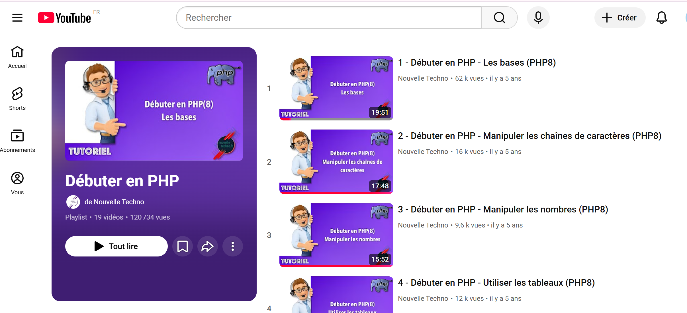

Jolan BERTIN S4A1
jolan.bertin@edu.univ-fcomte.frSavoir-faire intégration en entreprise
Cette partie permet de présenter comment j'ai été encadré, je me suis intégré ainsi que les propositions que j'ai pu faire au sein de l'équipe.Agir/travailler en autonomie de façon mesurée

Savoir-faire élémentaire : S'auto-former sur de nouveaux langages et outils .

Trace 18 : Tutoriels en ligne d'un professeur sur le langage PHPPuisque je suis en général seul sur les projets qui me sont confiés (mise en place d'un agenda en ligne Calendly, création d'une application web qui recense des accès d'assurances), je travaille beaucoup en autonomie.
Tout d'abord, je me renseigne sur les différents outils dont j'ai besoin (WordPress, Calendly, PHP) , mais je travaille aussi beaucoup en autonomie. Les consignes étant données (fonctionnalités voulues pour l'application web, mise en place de Calendly sur sily.fr, ...) c'est à moi de me renseigner et de mettre à bien les demandes.
Toutefois, si un point d'ombre pour une tâche me gène, je n'hésite pas à proposer des solutions (pour choisir ensuite la meilleure solution) ou demander directement plus de précisions pour pouvoir avancer au mieux.
De plus, puisque je travaille sur mon ordinateur personnel, cela me permet de consulter mon travail en dehors de mon bureau de travail.